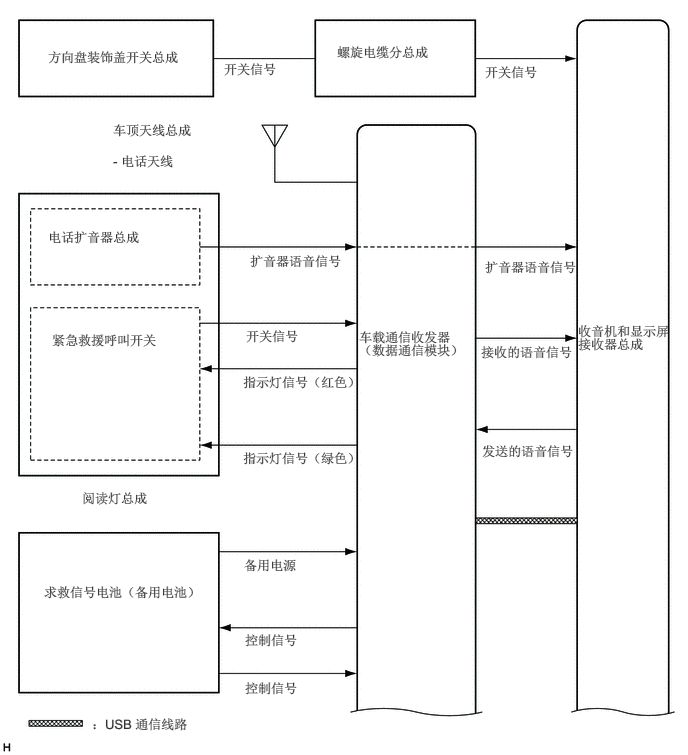

0.5,0.51 2.51,0.813
2,0.292
10
false
方向盘装饰盖开关总成
2.333,0.635 3.26,1.01
0.917,0.365
10
false
开关信号
3.51,0.458 4.635,1.104
1.115,0.635
10
false
螺旋电缆分总成
5.052,0.667 5.979,1.042
0.917,0.365
10
false
开关信号
1.177,1.271 2.813,1.479
1.625,0.198
10
false
车顶天线总成
3.74,3.427 4.854,3.854
1.104,0.417
10
false
车载通信收发器 （数据通信模块）
2.604,2.635 3.917,3.156
1.302,0.51
10
false
扩音器语音信号
5.052,2.698 6.25,3.146
1.188,0.438
10
false
扩音器语音信号
0.5,2.385 1.906,2.917
1.396,0.521
10
false
电话扩音器总成
0.542,3.458 2,3.792
1.448,0.323
10
false
紧急救援呼叫开关
0.854,5.104 2.719,5.479
1.854,0.365
10
false
阅读灯总成
2.563,3.417 3.49,3.792
0.917,0.365
10
false
开关信号
2.531,3.896 3.948,4.521
1.406,0.615
10
false
指示灯信号（红色）
2.531,4.688 4.052,5.208
1.51,0.51
10
false
指示灯信号（绿色）
5.01,3.583 5.979,4.01
0.958,0.417
10
false
接收的语音信号
5.021,4.615 6.188,5.292
1.156,0.667
10
false
发送的语音信号
0.458,6.083 2.167,6.823
1.698,0.729
10
false
求救信号电池（备用电池）
2.542,5.802 3.479,6.26
0.927,0.448
10
false
备用电源
2.552,6.583 3.49,6.927
0.927,0.333
10
false
控制信号
2.552,7.083 3.49,7.427
0.927,0.333
10
false
控制信号
6.021,3.365 7.031,4.063
1,0.688
10
false
收音机和显示屏接收器总成
1.177,1.594 2.531,1.833
1.344,0.229
10
false
- 电话天线
0.958,7.458 2.875,7.729
1.906,0.26
10
false
：USB 通信线路